")
Gradlinige Positionierung als Harfe oder Pfeil.
Wenn eine Staffel positioniert wird, können die Endsymbole frei mit den Mittensymbolen kombiniert werden. Wird eine Formverlegung positioniert, wird die Auswahl für die Mittensymbole ausgeblendet.
Elemente einer Harfen-Positionierung
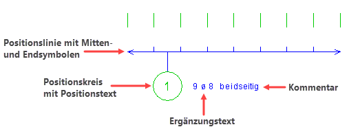 |
Verfügbare End- und Mittensymbole
Bewegen Sie den Cursor über ein Symbol, um mehr Informationen zu erhalten.
Endsymbole 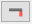 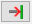 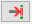 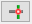 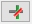 Nur bei Verlegung als Staffel, Durchmesser im Schnitt und Verlegung mit Formdarstellung. |
Mittensymbole 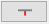 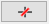 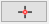 Nur bei Verlegung als Staffel und Durchmesser im Schnitt. |
Beispiele verschiedener Kombinationen von End- und Mittensymbolen
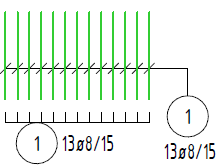
|
[Harfe oben]: Schrägstrich als Mittensymbol / ohne Endsymbol [Harfe unten]: Linie als Mitten- und Endsymbol |
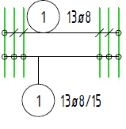
|
[Harfe oben]: Schrägstrich als Mittensymbol / Kreis als Endsymbol [Harfe unten]: Kreis als Mitten- und Endsymbol |
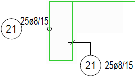
|
[Harfe links]: Kreis als Endsymbol [Harfe rechts]: Schrägstrich als Endsymbol |
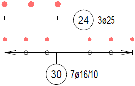
|
[Harfe oben]: Linie als Mitten- und Endsymbol [Harfe unten]: Kreis als Mittensymbol / Pfeil und Linie als Endsymbol |
|
Tipps: |
|
·Die Darstellung der Positionierung können Sie vorab im DefPos-Dialog einstellen. [Formst | BiPos → DefPos]. ·Die Positionierungen der Verlegungen der Varianten werden mit Stil-Nr. 1 und den einfachen Strichen als Mitten- und Endsymbole ausgeführt. |

1.Positionslinie zeichnen
§Klicken Sie ein Element in der Darstellung der verlegten Bewehrung mit Linksklick an. [Welche Gruppe?].
Die Verlegegruppe wird markiert.
§Führen Sie einen der folgenden Schritte aus:
a)Geben Sie einen Winkel ein und bestätigen Sie mit der Eingabetaste. [Winkel]. b)Bestätigen Sie den vorgeschlagenen Wert mit Rechtsklick. Der vorgeschlagene Winkel ergibt sich aus der Verbindungsgeraden vom Verlegeanfang zum Verlegeende. c)Mit den Ausrichtungsoptionen P... und O... können Sie die Harfe parallel oder senkrecht zu einem Bezugselement ausrichten. Klicken Sie eine Ausrichtungsoption und anschließend das entsprechende Bezugselement an. |
§Klicken Sie mit der linken Maustaste an die Stelle, wo die Harfe abgelegt werden soll. [Lage].
Wenn Sie eine vorhandene Linie anklicken, wird die angeklickte Koordinate übernommen.
2.Positionskreis und -text zeichnen
§Geben Sie einen Winkel ein und bestätigen Sie mit der Eingabetaste oder nutzen eine der unter der Abfrage stehenden Ausrichtungsoptionen. [Text-Ri].
Als Textrichtung wird der Winkel der Positionslinie vorgeschlagen.
§Lage des Positionskreises festlegen: [Lage Pos.-Kreis].
Es können zwei verschiedene Lagen des Positionskreises zur Harfe gewählt werden - den Positionskreis über einen Fangpunkt bzw. -bereich oder frei platzieren. Siehe Bild: [Endgültige Lage].
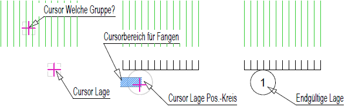 |
Für die Lage des Positionskreises bewegen Sie den Cursor in die Nähe der Grundlinie. Die Grundlinie „fängt“ den Kreis so lange, wie Sie den Cursor dicht an der Grundlinie bewegen. Die endgültige Lage wird so ausgeführt, dass der Positionskreis direkt an der Grundlinie liegt. |
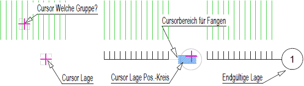 |
Fahren Sie den Positionskreis mit einem Abstand zur Harfe ungefähr auf die Höhe der Grundlinie und drücken die linke Maustaste. Der Positionskreis wird auf dieses Niveau exakt verschoben. Die Grundlinie wird bis an den Kreis verlängert. |
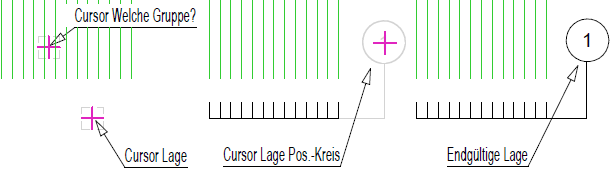 |
Liegt der Positionskreis weit von der Grundlinie entfernt, wird die Grundlinie bis zum Kreis verlängert und eine senkrechte Verbindungslinie zwischen der Grundlinie und dem Positionskreis hergestellt. Es besteht immer eine Verbindung zwischen dem Positionskreis und der Harfe. |
3.Ergänzungstext und Kommentar hinzufügen
§Je nachdem, wie die Verlegung ausgeführt wurde, werden entsprechende Texte angeboten: [Ergänzungstext (mit - überspringen)].
Durchmesser und Anzahl |
Es wurden 2ø10 verlegt. |
Durchmesser und Abstand |
Auf 3.50m sind ø8 im Abstand von 15cm verlegt worden. ø8/s=15 , 25ø8/s=15. |
Verlegefaktor > 1 |
Vor den Ergänzungstext wird der Verlegefaktor angeschrieben. Beispiel: Verlegefaktor = 3 Vorschlag Ergänzungstext: 3x10 ø 14 |
§Führen Sie einen der folgenden Schritte aus:
a)Geben Sie einen Ergänzungstext ein und bestätigen Sie. b)Wählen Sie aus der Liste den entsprechenden Ergänzungstext aus, indem Sie diesen anklicken. c)Bestätigen Sie die Eingabe mit Rechtsklick. Vorausgewählt wird immer der Ergänzungstext ohne Verlegefaktor. d)Wenn kein Ergänzungstext geschrieben werden soll, geben Sie "-" ein und bestätigen Sie. |
§(Optional) Kommentar hinzufügen: [Textlage].
|
Sie können hinter den Ergänzungstext noch einen Kommentar setzen (z. B. "verschwenkt einbauen").
Um einen Kommentar hinzuzufügen: §Klicken Sie auf die Schaltfläche Kommentar unter der Abfrage. [Textlage]. §Geben Sie einen Text ein. [Kommentar]. Sie können aus der Auswahlliste einen Favoritentext oder einen der 10 zuletzt eingegebenen Texte durch Anklicken in die Eingabezeile übernehmen und weiterbearbeiten. Wenn Sie einen bestimmten Text aus der Zeichnung übernehmen möchten, klicken Sie diesen an. Mit rechts neben der Eingabe können Sie Sonderzeichen einfügen.
§Bestätigen Sie die Texteingabe mit der Eingabetaste oder Rechtsklick. §Legen Sie die Lage des Kommentartextes bezogen auf den Ergänzungstext fest. Sie können den Text über, unter oder neben den Ergänzungstext setzen und dabei die Ausrichtung bestimmen. [Textlage]. Der blaue Strich im Icon entspricht der Lage des Kommentartextes. Am Cursor wird eine Vorschau der ausgewählten Lage angezeigt.
Wenn Sie den Kommentar bearbeiten möchten, klicken Sie die Schaltfläche Kommentar erneut an. |
§Lage des Ergänzungstextes (und Kommentartextes) festlegen: [Textlage].
Es können zwei verschiedene Lagen des Ergänzungstextes zum Positionskreis gewählt werden - den Ergänzungstext über einen Fangpunkt bzw. -bereich oder frei platzieren. Siehe Bild: [Endgültige Lage]
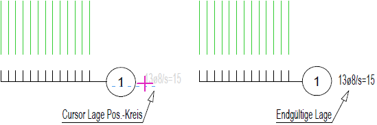 |
Bewegen Sie den Ergänzungstext ungefähr auf der Höhe des Positionstextes, wird die Zeilenhöhe übernommen. Das wird Ihnen als Voransicht angezeigt. Die horizontale Position wird beibehalten. |
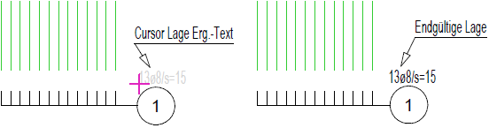 |
Legen Sie den Ergänzungstext unter- oder oberhalb des Positionskreises ab, wenn dahinter nicht genügend Platz zur Verfügung steht. |
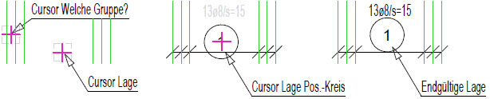 |
Alternativ kann die Positionierung auch direkt zwischen die Stäbe gezeichnet werden. Dann werden die gewählten End- und Mittensymbole gezeichnet. |